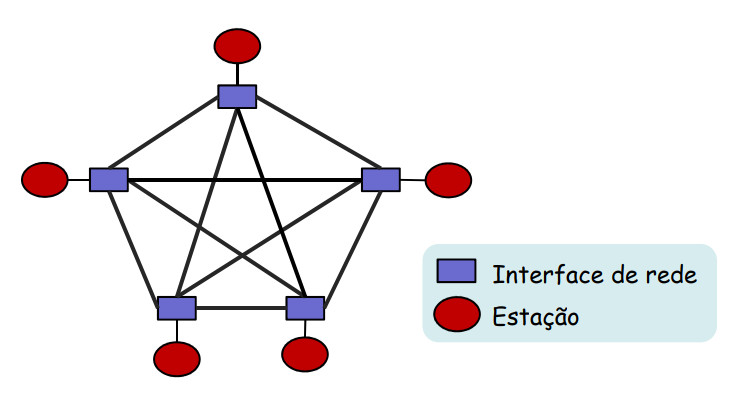
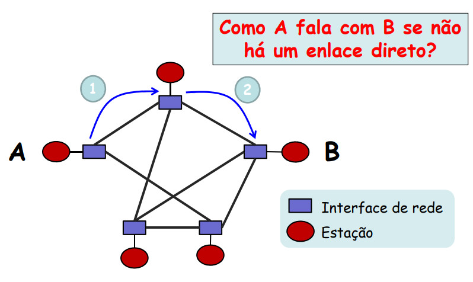
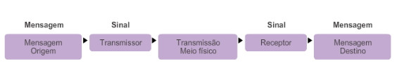
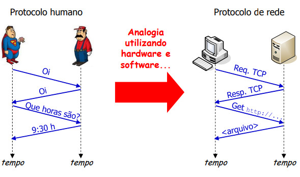
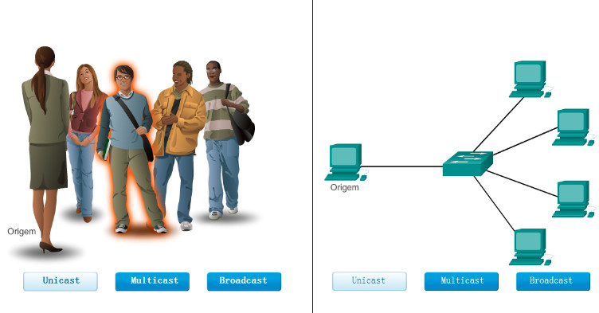
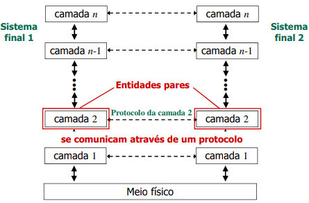
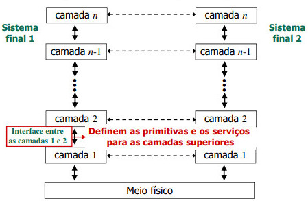
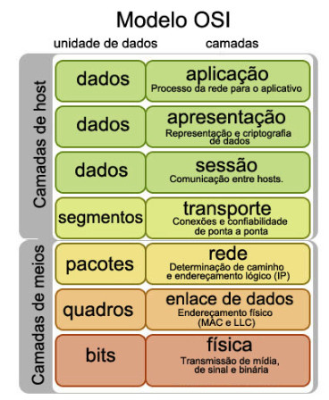

Redes de Computadores
Professor Ricardo Ferreira - https://ricardoferreira.site
Especialista em Redes Locais e Metropolitanas (UEMA)
Bacharel em Ciência da Computação (UFMA)
Roteiro
- Contextualização
- Definições e uso das Redes de Computadores
- Classificação de Redes de computadores
- Arquitetura de Redes (Software de Redes)
- Modelo de Referência
Objetivos
- Apresentar as topologias e dispositivos usados em uma rede de diferentes tamanhos
- Unidades de medida
Antes e hoje
~ 1995 - Computação "fixa" (você ia até o dispostivo)
~ 2000 - Mobilidade/BYOD (dispositivo junto)
~ 2010 - A Internet das Coisas (era dos dispostivos)
Hoje - IoT (pessoas, processos, dados e coisas)
Impactos diretos
- como aprendemos
- como nos comunicamos
- como trabalhamos
- como nos divertimos
Definições
- Conjunto de computadores autônomos interconectados por uma única tecnologia
- A Internet é uma "rede de redes"!
- Sistema de comunicação que visa a interconexão entre computadores, terminais e periféricos
Aplicações
- Aplicações comerciais
- Compartilhamento de recursos físicos (VPS's)
- Comunicação entre usuários (chats corporativos)
- Comércio eletrônico (e-commerce B2B)
Aplicações
- Aplicações Domésticas
- Acessso a informações remotas (WWW)
- Comunicação entre usuários (IMs)
- Comércio eletrônico (e-commerce B2C e C2C)
- Entretenimento
- Usuários Móveis (notebooks/smartphones)
Classificação das Redes de computadores
- Segundo a extensão geográfica
Redes Pessoais (PAN)
- Cobrem distâncias muito pequenas
- Destinadas a uma única pessoa
- Ex.: Bluetooth, ZigBee etc.
- Por serem comumente sem-fio são chamadas também de WPAN (Wireless PAN)
Redes Locais (LAN)
- Cobrem pequenas distâncias
- Um prédio ou um conjunto de prédios
- Ex.: Ethernet, Token Ring, WiFi, etc.
Redes Metropolitanas (MAN)
- Cobrem grandes distâncias
- Geralmente pertencentes a uma mesma organização
- Ex.: Rede baseada na TV a cabo, Redecomep de São Luís da RNP, etc
Redes de Longa Distância (WAN)
- Cobrem distâncias muito grandes
- Transmissão através de comutadores de pacotes interligados por enlaces dedicados
- Ex.: ATM
Resumo Classificação
| Distância |
Espaço |
Exemplo |
| 1m |
Metro quadrado |
Rede Pessoal (PAN) |
| 10m |
Sala |
Rede Local (LAN) |
| 100m |
Edifício |
Rede Local (LAN) |
| 1k |
Campus |
Rede Local (LAN) |
| 10k |
Cidade |
Rede Metropolitana (MAN) |
Resumo Classificação
| Distância |
Espaço |
Exemplo |
| 100k |
País |
Rede Geograficamente Distruída (WAN) |
| 1.000k |
Continente |
Rede Geograficamente Distruída (WAN) |
| 10.000k |
Planeta |
Internet |
Classificação das Redes de computadores
- Segundo a topologia física
- Estruturas físicas de interligação dos equipamentos da rede
- Cada uma apresenta características próprias
- Custo, Confiabilidade, Alcance (Diferentes implicações)
- Tipos mais comuns:
- Malha, Estrela, Anel, Barramento, Híbridas
Malha
- Em WANs, principalmente
- Em geral, em LANs não
- Difícil de gerenciar - conexões (N x (N – 1)) / 2
- Tipos: Malha totalmente conectada ou Malha parcialmente conectada
Malha totalmente conectada
Cada estação é conectada a todas as outras estações
- Vantagem: sem necessidade de roteamento
- Desvantagem: grande quantidade de conexões
Malha totalmente conectada

Malha parcialmente conectada
Cada estação pode ser conectada diretamente a um número variável de estações
- Vantagem: arranjo de acordo com o tráfego (evitar congestionamentos)
- Desvantagem: necessita de decisão de encaminhamento
Malha parcialmente conectada

Estrela
Decisões de encaminhamento centralizadas em um nó. Usada, principalmente, em LAN's
- Vantagem: escalável e gerenciamento centralizado.
- Desvantagem: confiabilidade e capacidade do nó central
Anel (Ring)
Cada nó é conectado a outros dois, formando um anel. Usada, principalmente, em MAN's
- Vantagem: nós acessam a rede igualmente e a performance não é impactada com o aumento deles
- Desvantagem: necessita de mecanismos de acesso ao meio compartilhado
Barramento
Mensagens transferidas sem a participação dos nós intermediários. Elas se propagam por toda a extensão do enlace. Usada, principalmente, em LAN's
- Vantagem: Não há necessidade de decisões de encaminhamento
- Desvantagem: necessita de mecanismos de acesso ao meio compartilhado
Híbridas
- Algumas configurações:
- Anel-estrela
- Barramento-estrela
- Estrela-anel
- Árvore de barramentos
Internet
E a Internet, como poderia ser classificada?
Internet
- Rede complexa que combina outras redes:
- Com diferentes extensões geográficas
- Com diferentes topologias
- Classificada conforme o seu papel funcional:
- Redes de borda (sistemas finais e redes de acesso)
- Redes de núcleo (ou redes de provedores de serviço)
Arquitetura de Redes
- Diz respeito como se designa um conjunto de camadas e protocolos de rede
- Princípios básicos de comunicação em Redes
Mas, o que é uma comunicação?
O que é necessário para duas pessoas se comunicarem?
Um canal de comunicação entre elas
Mas, o que é uma comunicação?
O que é necessário para duas pessoas se entenderem?
Uma linguagem comum entre as duas partes
Mas, o que é uma comunicação?

Protocolos de comunicação

Protocolos de comunicação
Conjunto de regras e procedimentos que definem a comunicação entre duas ou mais entidades
- Protocolo de aplicação – Protocolo HTTP
- Protocolo de transporte – Protocolo TCP
Estabelecendo Regras
- Um emissor e um receptor identificados
- Acordo sobre o método de comunicação (cara a cara, por telefone, carta, foto)
- Língua e gramática comum
- Velocidade e ritmo de transmissão
- Requisitos de confirmação ou recepção
Formatação e encapsulamento da mensagem
Exemplo: uma carta contém os seguintes elementos:
- Um identificador de destinatário
- Uma saudação ou cumprimento
- O conteúdo da mensagem
- Uma frase de encerramento
- Um identificador de remetente
Opções de entrega da mensagem

Tecnologias de transmissão
- Difusão (broadcast)
- Multidifusão (multicast)
- Ponto a ponto (unicast)
Arquitetura em Camadas
- Por quê? Reduzir a complexidade do projeto de uma rede de comunicação
- Cada camada:
- Provê um serviço para camadas superiores
- “Esconde” das camadas superiores como o serviço é implementado através de uma interface
- especifica quais parâmetros e os resultados a serem esperados
- Se comunica com sua camada correspondente através de um protocolo (conjunto de regras e convenções)
Arquitetura em Camadas

Arquitetura em Camadas

Modelos
- Modelo de referência OSI
- Proposto pela ISO (International Standards Organization) - anos 70
- apenas um modelo de referência
- Modelo TCP/IP
- protocolos associados ao modelo são amplamente usados
- na prática, define os protocolos para cada camada
Modelo de Referência OSI

Próximas aulas
- Detlhamento de cada camada do Modelo TCP/IP
- Transferência de dados: Comutação de circuitos x Comutação de pacotes
- Métricas: avaliação do desempenho de uma rede (Jitter, Throughput)
Referências
- Capítulo 1 e 2 do Livro “Computer Networks”, Andrew S. Tanenbaum e David J, Wetherall, 5a. Edição, Editora Pearson, 2011
- Capítulo 1 do Livro “Computer Networking: A Top Down Approach”, 5a. Ed., Jim Kurose and Keith Ross, Editora Pearson, 2010
- Notas de aula do Prof. Luís Henrique Maciel Kosmalski Costa - disponível em http://www.gta.ufrj.br/ensino/eel878
- Notas de aula do curso Netcad da Cisco 5.0 - 2014